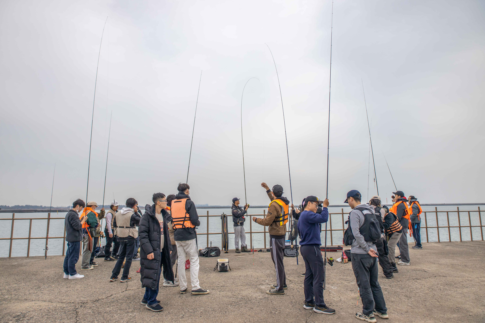
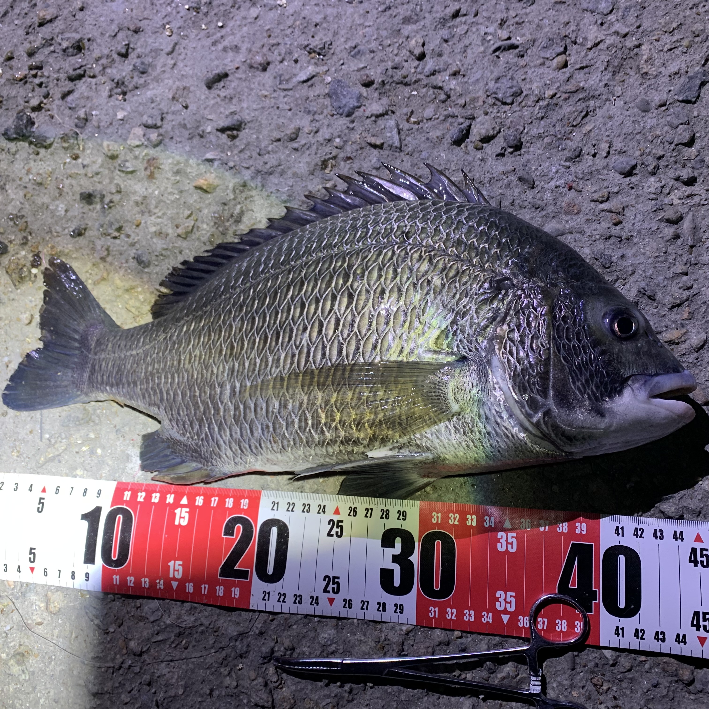
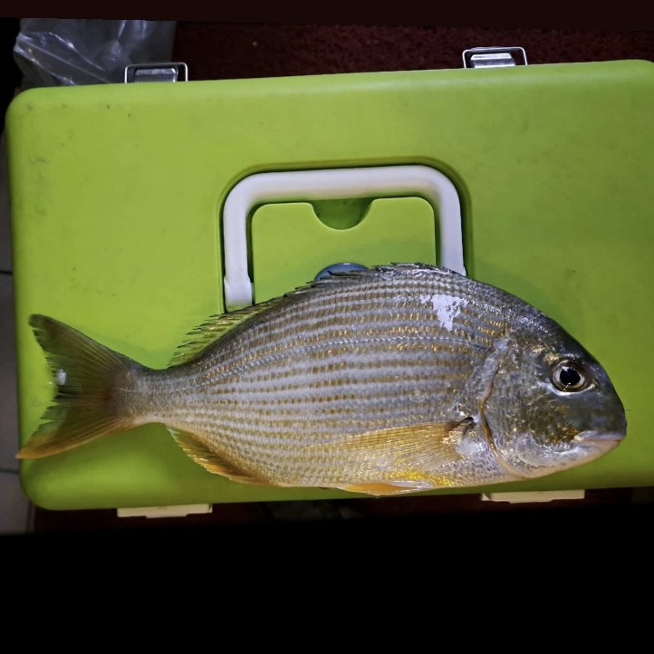
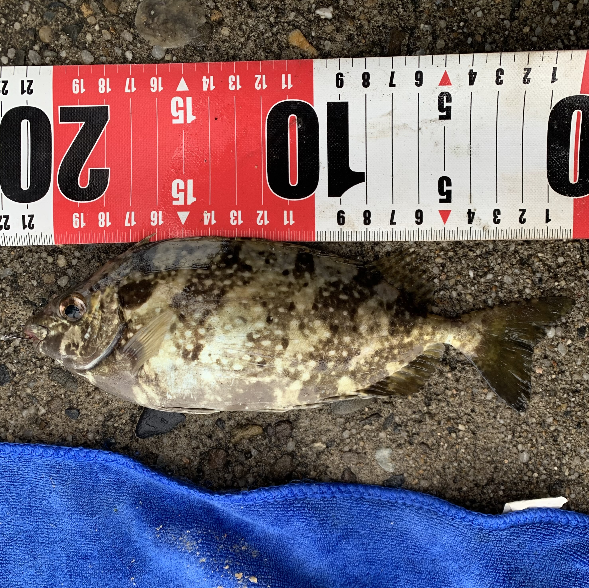

安平港岸的釣點探索#
導覽序言#
安平港不僅是台灣歷史與文化的縮影，更是釣魚愛好者的天堂。此導覽以釣點探索為主題，展示安平各個釣點的點位，包括釣獲魚種、合適釣法與安全建議，讓釣魚新手與老手都能找到適合的釣點，進一步提升釣魚體驗。

Fig. 1 台南安平港新北堤 2023/12/23#
安平港範圍#
安平港內的釣點分佈範圍涵蓋漁港與商港兩區。無論是面向港內的靜水區域，還是外港的潮流區域，釣客都能找到適合自己的釣魚位置。然而，需特別注意港口部分區域為禁釣區，請依港口規範進行垂釣，確保自身安全。
安平漁港：綠色區域
安平商港：藍色區域
Show code cell source
import folium
import math
from folium import plugins
# 地圖初始化
focus_center = [22.97996499492705, 120.16060291805357]
initial_zoom = 14
m = folium.Map(location=focus_center, zoom_start=initial_zoom, width='100%', height='100%')
# 定義漁港和商港的範圍經緯度
coordinates_port_old = [
(22.98652226193982, 120.14314135883448),
(22.98565817778794, 120.1409444821172),
(22.985378954749702, 120.14107163351748),
(22.98442526700474, 120.13867908760706),
(22.984934837581722, 120.13615556442761),
(22.980706818850855, 120.12537998238898),
(22.983200936078912, 120.12423832536781),
(22.98774615558894, 120.1358223824574),
(22.99166494499389, 120.14000515442117),
(22.992821678536387, 120.13859888818186),
(22.990566171131253, 120.1362481419121),
(22.990978367404296, 120.13579681182992),
(22.993239139521492, 120.13810987485127),
(22.996081228721575, 120.13500648026661),
(22.996320811868777, 120.13499315166926),
(22.996633840172887, 120.13531303507995),
(22.998011013955782, 120.13673199166169),
(22.99592425120849, 120.14003163778943),
(22.993638821890464, 120.14227531419832),
(22.993511772993838, 120.14343082369899),
(22.997322084107026, 120.14540041173223),
(22.999428610295368, 120.1448612584825),
(22.999567960647628, 120.1454550882714),
(22.99907725421138, 120.14558100058649),
(23.00009950106809, 120.15026162834529),
(22.99884569419394, 120.1505817141485),
(22.998978977010758, 120.15120323863003),
(22.99826753523976, 120.15138129880896),
(22.99833495740817, 120.15169561047598),
(23.000597480051425, 120.15347248683165),
(23.000125154993214, 120.15491297111254),
(23.000095879867953, 120.15539039507792),
(22.999000244594257, 120.15518120806732),
(22.99675633352673, 120.15549525134736),
(22.995362363083533, 120.14956293282616),
(22.99462869329082, 120.14888214163047),
(22.991024951144666, 120.14887074829892),
(22.99094590861329, 120.14785893884309),
(22.989776797912388, 120.14720712993872),
(22.988001996052315, 120.14494235745812),
(22.989423017769944, 120.14369584465248),
(22.98905427167945, 120.14321876348944),
(22.98932581842077, 120.14293089649783),
(22.98833205896235, 120.14163852682336),
(22.98652226193982, 120.14314135883448)
]
# 定義安平商港經緯度座標
coordinates_port_new = [
(22.959776096968785, 120.15161075610312),
(22.96054636712402, 120.14875531313957),
(22.962494443289447, 120.14747911673149),
(22.965377913021804, 120.14727703408538),
(22.97245665247682, 120.15537730276284),
(22.97488485902668, 120.1529121378679),
(22.977582556025066, 120.15237442862089),
(22.983896912579212, 120.14899840536415),
(22.984800659629585, 120.15130078133024),
(22.976076644154084, 120.15904325714203),
(22.97641188526243, 120.15938683851023),
(22.97291838669799, 120.1621417046208),
(22.97404267032466, 120.16350607814626),
(22.97631045275247, 120.1616476962521),
(22.977504773278458, 120.16066903747375),
(22.981794930976378, 120.15715361378923),
(22.984126153095954, 120.16052551973102),
(22.985041571167752, 120.16136944933821),
(22.984834026276243, 120.16176193269277),
(22.98494562013618, 120.1659117770654),
(22.98324629138883, 120.16588563505552),
(22.98150444265588, 120.166909358707),
(22.980505517503904, 120.17627194226337),
(22.98269163082021, 120.17961800821804),
(22.98246732571981, 120.18179619761978),
(22.979620349436267, 120.1774401857557),
(22.976695065778404, 120.17677447150888),
(22.97650881596899, 120.17773251875612),
(22.976190107881088, 120.1776595468422),
(22.976376031826472, 120.17670316167325),
(22.973606889393423, 120.17608515446345),
(22.9733851397334, 120.17702115931692),
(22.972977860809657, 120.17693019847886),
(22.97320040324996, 120.17598697383805),
(22.97072387404276, 120.17543060723251),
(22.969992099805022, 120.17398003685702),
(22.969260623795375, 120.1743873361258),
(22.969025461468778, 120.17409083985739),
(22.969792194455398, 120.17358541487752),
(22.969092872350718, 120.17218464506755),
(22.966599031960506, 120.174040532473),
(22.96326930341673, 120.17591404200475),
(22.96311081208907, 120.17613041475387),
(22.96093679349121, 120.17679185667279),
(22.959166567870437, 120.17609177820282),
(22.9592118375472, 120.17297754396546),
(22.959870657122547, 120.17296486214532),
(22.961191671201284, 120.17263542279336),
(22.96123132512282, 120.17343444810382),
(22.961769509703263, 120.17343117806072),
(22.961753697216363, 120.17249528892563),
(22.96250111764567, 120.17230790566644),
(22.963173886223895, 120.17191116962891),
(22.96300610372072, 120.16926605849929),
(22.965030143273903, 120.16851577410738),
(22.967274410009395, 120.16695248196733),
(22.966454227134804, 120.16565115559045),
(22.959776096968785, 120.15161075610312)
]
# 目標點和參考點
reference_coord = (22.984934837581722, 120.13615556442761)
target_coord = (22.983253741376927, 120.1442680578393)
# 計算經度和緯度的平移差值
lat_diff = target_coord[0] - reference_coord[0]
lon_diff = target_coord[1] - reference_coord[1]
# 平移所有點位
coordinates_port_old = [(lat + lat_diff, lon + lon_diff) for lat, lon in coordinates_port_old]
# 添加範圍資訊到地圖
def add_area_info(coords, color, name, description, m):
folium.Polygon(locations=coords, color=color, fill=True, fill_opacity=0.3).add_to(m)
# 中心點
center_lat = sum(lat for lat, lon in coords) / len(coords)
center_lon = sum(lon for lat, lon in coords) / len(coords)
# 添加標記和簡要資訊
popup_html = folium.Html(f"""
<div style='font-size: 16px;'>
<b>{name}</b><br>
{description}
</div>
""", script=True)
popup = folium.Popup(popup_html, max_width=300)
folium.Marker([center_lat, center_lon], popup=popup, icon=folium.Icon(icon='info-sign', color="blue")).add_to(m)
# 添加安平漁港和安平商港的範圍到地圖
add_area_info(coordinates_port_old, "green", "安平漁港", "位於港口北部，為傳統漁業重地，港內多為漁船停泊與漁貨交易區。", m)
add_area_info(coordinates_port_new, "blue", "安平商港", "位於港口南部，為現代化商業港口，主要服務於商業物流與大型船隻停靠。", m)
# 顯示地圖
m
Tip
地圖展示了安平漁港和安平商港的範圍，點擊中心標記可查看相關資訊。
安平釣點導覽地圖#
本地圖展示了安平港內的主要釣魚場地，以標記點標示各釣點的位置與相關資訊。釣客可點擊標記點了解釣場的特色，包括常見漁獲、合適釣法及安全建議。
標記點資訊：
【常見漁獲】：統計每個釣場的釣獲資訊，提供釣客了解該釣點的常見魚種。
【合適釣法】：針對釣場地形與魚種推薦的釣法。
【安全建議】：提供每個釣場的安全注意事項，確保釣魚活動的安全性。
注意事項：
禁釣區：部分區域（如港口航道或船隻進出頻繁的地方）已被劃為禁釣區，請遵守規範，避免罰款或意外。
Show code cell source
from IPython.display import HTML
# 讀取 HTML 文件並嵌入到 Notebook 中
with open("_static/fish_map.html", "r", encoding="utf-8") as f:
html_content = f.read()
# 顯示 HTML
HTML(html_content)
Tip
1. 選擇釣點：地圖下方提供釣點按鈕。點擊按鈕後，對應釣點的範圍與標記將顯示在地圖上。
2. 查看資訊：點擊地圖上的釣點標記，即可查看彈出的詳細資訊卡片，包括漁獲種類、釣法建議、安全提示與相關圖片。
台南最常見的垂釣魚種#
太平洋棘鯛：#
習性：又稱黑鯛。偏好生處在淡鹹水交界處，又或者是水流較為緩慢的礁岩區。主要以底棲生物為食。
體長：~50cm
釣法：磯釣、前打、沉底
季節：四季皆有，冬天體型較大
推薦釣點：馬場北堤、馬場南堤

Fig. 2 馬場北堤 2023/10/20#
平鯛：#
習性：又稱班頭。跟黑鯛習性相似，為肉質更為鮮美的食用魚。
體長：~30cm
釣法：磯釣、前打、沉底
季節：夏季為主
推薦釣點：馬場北堤、馬場南堤

Fig. 3 馬場南堤 2023/11/13#
褐臭肚魚：#
習性：常見於礁岩區的海域，主要攝食藻類。魚鰭具有毒腺，被刺後會引起劇痛，需格外小心。
體長：~40cm
釣法：磯釣
季節：四季皆有，夏天數量較多
推薦釣點：馬場北堤、馬場南堤、新北堤、保七南堤

Fig. 4 新北堤 2023/12/23#